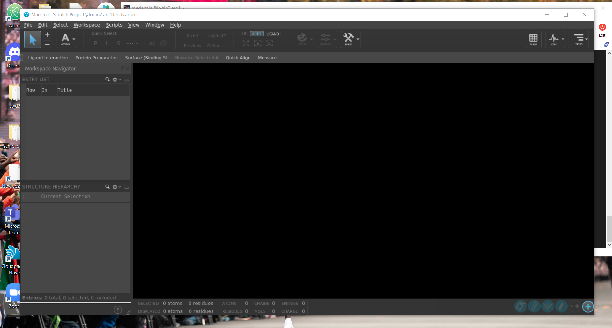

Schrodinger#
Both ARC3 and ARC4 have Schrodinger Suite 2020-1, Build 12 installed.
Description#
The Schrodinger suite, developed by Schrodinger Inc, is a computational chemistry program with a number of different tools for evaluating compounds in silico, with experimental accuracy on properties such as binding affinity and solubility.
Licensing#
To run Schrodinger suite programs a license is required and limits the number of cores available. You will be unable to load any schrodinger suite tools until you have specified the relevant license server information which you should request from your supervisor or department.
You will then need to set an environment variable when logged into ARC3/ARC4 that specifies the license host address and port number as follows:
# this is an example
$ export SCHROD_LICENSE_FILE=<port>@<host>
You will also need to include this within any job submission scripts to ensure your jobs don’t terminate early because they haven’t got the license server configured.
Documentation#
Documentation is available for Schrodinger on ARC3/ARC4. It is possible to load this directly on ARC3/ARC4 when connecting with X11 graphical forwarding, using FireFox to open the HTML documentation pages with the following command:
$ module add schrodinger/2020-1
$ firefox $SCHRODINGER_HOME/docs/Documentation.htm
Basic Usage#
To access some of the Schrodinger suite of tools you can load the module with the command:
$ module add schrodinger/2020-1
This allows you to access a number of executables from the command line and adds a new environment variable $SCHRODINGER_HOME from which it is possible to access more executables via the $SCHRODINGER_HOME/utilities directory.
Maestro#
Warning
To use maestro from ARC3/ARC4 you will need to connect with X11 graphical forwarding enabled
Maestro is the primary graphic user interface to the Schrodinger suite of tools and can be used to submit jobs directly to the scheduling system.
To start maestro you will need to have added the schrodinger module and set the license server environment variable, after which you can run:
$ maestro
This will load up a separate window containing the maestro GUI.

Note
It is not recommended to use maestro for developing your workflows via this method as the user experience can be quite laggy. It is recommended workflow files are produced on your local machine using Schrodinger 2020-1 and uploaded to ARC4 for use on the batch queuing system.
Glide#
Warning
Current licensing restrictions mean glide is only able to run on one core at any one time.
Glide is a tool that allows for high speed computation docking for screening large numbers of compounds. It is available from the command line or can be specified from within the Maestro GUI. You can access the glide documentation on ARC4 using the following command (if you are connected with X11 graphical forwarding).
$ xdg-open $SCHRODINGER_HOME/docs/glide_user_manual/glide_intro.htm
Usage through command line#
Preparing files#
You should prepare your files on maestro in advance of running glide on the command line to perform computational docking. This will produce a number of files that you should transfer to the HPC system and will serve as the template for your job submission file, this includes:
A .sh file, this shell file contains a generic glide command to use to run this workflow
A .zip file containing receptor grid data
An .sdf file (structure data file) containing data about input chemical structures
A .in file, the input file for glide containing configuration settings
These files should be transferred to the HPC where we’ll write an additional file to submit them as a batch job.
Creating a job submission file#
Now that we’ve transferred our files onto the HPC we’re ready to start creating a job submission file to submit our glide job to the scheduler. Maestro helps make this relatively easy by creating the .sh file we encountered earlier that contains most of the command we need to include in our job submission file.
Take this example maestro.sh for the input file glide-dock_SP_1.in:
"${SCHRODINGER}/glide" glide-dock_SP_1.in -OVERWRITE -adjust -HOST localhost:2 -TMPLAUNCHDIR
This gives us the barebones of what we need to include in our job submission file with some slight changes outlined below:
#$ -cwd
#$ -l h_rt=00:15:00
#$ -l h_vmem=1G
module add schrodinger/2020-1
export SCHROD_LICENSE_FILE=<port>@<host>
"${SCHRODINGER_HOME}/glide" -OVERWRITE -adjust -LOCAL -WAIT -DEBUG glide-dock_SP_1.in
Here we’ve specified to use the glide executable that exists within the $SCHRODINGER_HOME directory, we set the job to overwrite (-OVERWRITE) any previous job files, we set -adjust to allow the job to determine the size of subjobs automatically, -LOCAL means the job writes any output files to the current directory rather than a temporary directory, -WAIT means the job does not return the prompt until the job completes (this must be set when submitting a job to the scheduler), -DEBUG includes details of the job control operation in the log file that is produced during the run.
Retrieving tabular scoring data (optional)#
By default glide outputs data in the poseviewer format (_pv.maegz) which can be opened by Maestro. You can also output a .csv file containing a selection of properties of all ligands by adding the following line to your .in file.
WRITE_CSV 1
Usage through Maestro#
Note
Help wanted!
This is something we aren’t familiar with, maybe you are and can contribute to this help page! Open an issue via GitHub or contact us via https://bit.ly/arc-help
Covalent Docking#
Covalent docking is a functionality within the glide tool within Schrodinger that allows for simulating screening the docking of ligands to a receptor covalently. It is described in the documentation as follows:
The Covalent Docking protocol addresses the process as follows. First, it determines whether ligands can associate with the receptor in a suitable pose. This is done by mutating the reactive residue on the receptor to glycine, so that the pose of the side chain does not unduly influence the association of the ligand, then docking the ligands with Glide, with constraints between the reactive residue and the reactive group on the ligand. Once suitable poses are found, the receptor is restored, and the poses of the side chain on the reactive residue are explored in the presence of the associated ligand, to find the best poses for reaction. The covalent bond is formed, and the ligand and reactive residue are minimized to relieve strain. The poses for a given ligand are clustered, and a representative pose is chosen from each cluster. These poses undergo a full minimization, and the representatives are ranked by their Prime energy.
You can read more about using covalent docking from the Schrodinger documentation that can be read directly on ARC4 using the following command (if you are connected with X11 graphical forwarding).
$ xdg-open $SCHRODINGER_HOME/docs/covalent_docking_user_manual/covalent_docking.htm
Requirements#
In order to run a covalent docking simulation you need to configure passwordless ssh access between compute nodes and the login nodes. This is required otherwise your job will write errors in your .log file that look like this:
FATAL: Error: in replying to ‘JPROXYPORT login1:65000-65256 chmche “/apps/applications/schrodinger/2020-1/1/default”’ - timeout
You can configure passwordless ssh between compute and login nodes with the following steps on ARC3:
# create an RSA key with no passphrase
$ ssh-keygen -N "" -t rsa -f ~/.ssh/id_rsa
# copy this key to your authorized_keys file
$ ssh-copy-id login1.arc3
Once these steps are complete and you can ssh from dc1s0b1a.arc3 to login1.arc3 without inputting a password you have correctly configured your account and can submit covalent docking issues without the timeout errors.